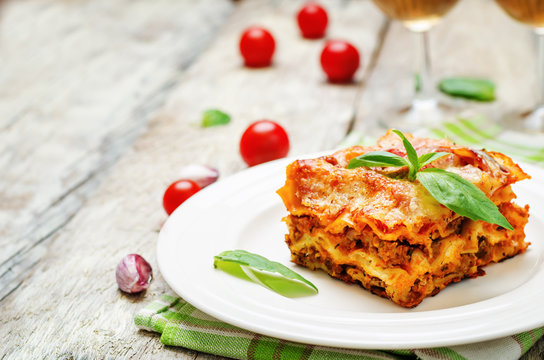

Home
Lasagna

Description
Everyone loves a good lasagna, right? It's a great way to feed a crowd and a perfect dish to bring to a potluck. It freezes well. It reheats well. Leftovers will keep you happy for days.
Ingredients
For the meat sauce
- 2 teaspoons extra virgin olive oil
- 1 pound ground beef
- 1/2 medium onion, diced
- 1/2 large bell pepper, diced
- 2 cloves garlic, minced
- 1 can tomato sauce
- tomato paste
- 1 can crushed tomatoes
- 2 tablespoons chopped fresh oregano
- 1/4 cup chopped fresh parsley
- 1 pinch garlic powder
- 1 tablespoon red or white wine vinegar
- 1 tablespoon to 1/4 cup sugar
- salt
To assemble the lasagna
- 1/2 pound dry lasagna noodles
- 15 ounces ricotta cheese
- 1 1/2 pounds mozzarella cheese
- 1/4 pound freshly grated Parmesan cheese
Steps
- Start by making the sauce with ground beef, bell peppers, onions, and a combo of tomato sauce, tomato paste, and crushed tomatoes. The three kinds of tomatoes gives the sauce great depth of flavor.
- Let this simmer while you boil the noodles and get the cheeses ready. We're using ricotta, shredded mozzarella, and parmesan—like the mix of tomatoes, this 3-cheese blend gives the lasagna great flavor!
- From there, it's just an assembly job. A cup of meat sauce, a layer of noodles, more sauce, followed by a layer of cheese. Repeat until you have three layers and have used up all the ingredients.
- Bake until bubbly and you're ready to eat!